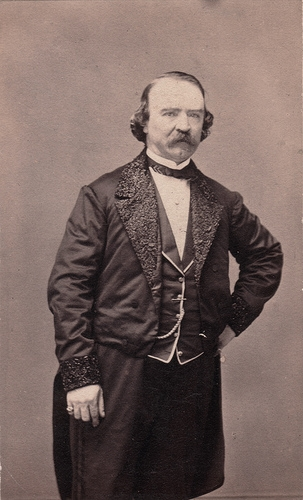

Sunday, April the 11th, 2010
back to: title, date or indexes
“His native land conquered, he had renamed himself the Great Wizard of the North and headed south to London. John Henry [Anderson]'s magical repertoire had grown accordingly, featuring egg-writing and an incomprehensible guinea pig trick, and he started something of a trend when he had become the first magician to pull a rabbit out of a hat… An unprecedented approach to advertising had seen whole towns papered with playbills announcing the most extraordinary sounding illusions, such as the ‘Grand Metamorphesian Wonder’ or the ‘Phoenixestocalobian’… His tricks might be standard, but the language of his posters promised something quite unique: ‘A Grand Ambidexterological Illusion with 12 Handkerchiefs, into which will be introduced the Enchanted Loaf and Learned Bottle, the Animated Orange and the Invisible Pigeon’. Not that anyone had the slightest idea what that was supposed to mean, any more than they would have recognised a Phoenixestocalobian, but that was just the point.”
Peter Lamont, The First Psychic : The Peculiar Mystery Of A Notorious Victorian Wizard (2005) (The book is a biography of D D Home, but includes this splendid stuff about Anderson.)

John Henry Anderson with his invisible pigeon
Hooting Yard on the Air, April the 15th, 2010 : “The Private Memoirs & Confessions of an Ignorant Ornithologist” (starts around 15:55)